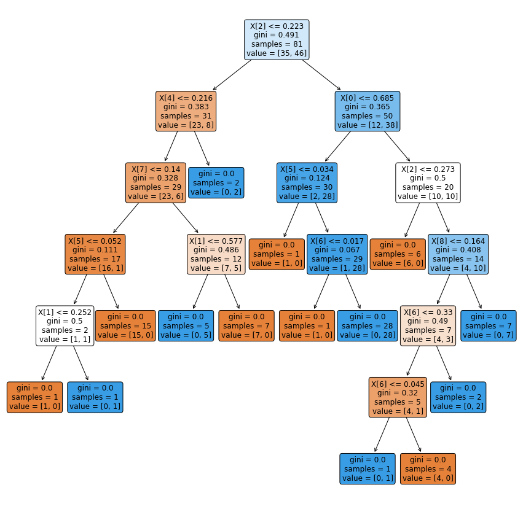

UTS
Contents
UTS#
Analisa Terhadap Dataset Breast Cancer Coimbra dengan menggunakan klasifikasi Naive Bayes dan Decision Tree
Naive Bayes#
P(C|X) = P(X|C) * P(C)
P(X|C) = $\( \frac{1}{\sqrt{2\Pi \sigma^{2}j }} e^{-\frac{(X_i-\mu)^{2}}{2\sigma^{2}j}} \)$
# Naive Bayes Classification
# Importing the libraries
import numpy as np
import matplotlib.pyplot as plt
import matplotlib.image as mpimg
import pandas as pd
dataset_url = "https://raw.githubusercontent.com/Nauvaldi/Dataset/main/dataR2.csv"
dataset = pd.read_csv(dataset_url)
dataset.head()
| Age | BMI | Glucose | Insulin | HOMA | Leptin | Adiponectin | Resistin | MCP.1 | Classification | |
|---|---|---|---|---|---|---|---|---|---|---|
| 0 | 48 | 23.500000 | 70 | 2.707 | 0.467409 | 8.8071 | 9.702400 | 7.99585 | 417.114 | 1 |
| 1 | 83 | 20.690495 | 92 | 3.115 | 0.706897 | 8.8438 | 5.429285 | 4.06405 | 468.786 | 1 |
| 2 | 82 | 23.124670 | 91 | 4.498 | 1.009651 | 17.9393 | 22.432040 | 9.27715 | 554.697 | 1 |
| 3 | 68 | 21.367521 | 77 | 3.226 | 0.612725 | 9.8827 | 7.169560 | 12.76600 | 928.220 | 1 |
| 4 | 86 | 21.111111 | 92 | 3.549 | 0.805386 | 6.6994 | 4.819240 | 10.57635 | 773.920 | 1 |
#Spliting the dataset in independent and dependent variables
X = dataset.iloc[:,:10].values
y = dataset['Classification'].values
# Splitting the dataset into the Training set and Test set
from sklearn.model_selection import train_test_split
X_train, X_test, y_train, y_test = train_test_split(X, y, test_size = 0.20, random_state = 82)
# Feature Scaling to bring the variable in a single scale
from sklearn.preprocessing import StandardScaler
sc = StandardScaler()
X_train = sc.fit_transform(X_train)
X_test = sc.transform(X_test)
# Fitting Naive Bayes Classification to the Training set with linear kernel
from sklearn.naive_bayes import GaussianNB
nvclassifier = GaussianNB()
nvclassifier.fit(X_train, y_train)
GaussianNB()
GaussianNB(priors=None)
GaussianNB()
# Predicting the Test set results
y_pred = nvclassifier.predict(X_test)
print(y_pred)
[2 1 2 2 1 1 2 1 2 2 1 1 2 1 2 2 2 2 2 1 1 1 2 1]
#lets see the actual and predicted value side by side
y_compare = np.vstack((y_test,y_pred)).T
#actual value on the left side and predicted value on the right hand side
#printing the top 5 values
y_compare[:10,:]
array([[2, 2],
[1, 1],
[2, 2],
[2, 2],
[1, 1],
[1, 1],
[2, 2],
[1, 1],
[2, 2],
[2, 2]])
# Making the Confusion Matrix
from sklearn.metrics import confusion_matrix
cm = confusion_matrix(y_test, y_pred)
print(cm)
[[11 0]
[ 0 13]]
#finding accuracy from the confusion matrix.
a = cm.shape
corrPred = 0
falsePred = 0
for row in range(a[0]):
for c in range(a[1]):
if row == c:
corrPred +=cm[row,c]
else:
falsePred += cm[row,c]
print('Correct predictions: ', corrPred)
print('False predictions', falsePred)
print ('\n\nAccuracy of the Naive Bayes Clasification is: ', corrPred/(cm.sum()))
Correct predictions: 24
False predictions 0
Accuracy of the Naive Bayes Clasification is: 1.0
Decision Tree With Gini Index#
import numpy as np
import pandas as pd
from matplotlib import pyplot as plt
from sklearn import datasets
from sklearn.tree import DecisionTreeClassifier
from sklearn import tree
import seaborn as sns
#Filtering the warnings
import warnings
warnings.filterwarnings('ignore')
# Load dataset iris
dataset_url = "https://raw.githubusercontent.com/Nauvaldi/Dataset/main/dataR2.csv"
data = pd.read_csv(dataset_url)
data.head()
| Age | BMI | Glucose | Insulin | HOMA | Leptin | Adiponectin | Resistin | MCP.1 | Classification | |
|---|---|---|---|---|---|---|---|---|---|---|
| 0 | 48 | 23.500000 | 70 | 2.707 | 0.467409 | 8.8071 | 9.702400 | 7.99585 | 417.114 | 1 |
| 1 | 83 | 20.690495 | 92 | 3.115 | 0.706897 | 8.8438 | 5.429285 | 4.06405 | 468.786 | 1 |
| 2 | 82 | 23.124670 | 91 | 4.498 | 1.009651 | 17.9393 | 22.432040 | 9.27715 | 554.697 | 1 |
| 3 | 68 | 21.367521 | 77 | 3.226 | 0.612725 | 9.8827 | 7.169560 | 12.76600 | 928.220 | 1 |
| 4 | 86 | 21.111111 | 92 | 3.549 | 0.805386 | 6.6994 | 4.819240 | 10.57635 | 773.920 | 1 |
data.info()
<class 'pandas.core.frame.DataFrame'>
RangeIndex: 116 entries, 0 to 115
Data columns (total 10 columns):
# Column Non-Null Count Dtype
--- ------ -------------- -----
0 Age 116 non-null int64
1 BMI 116 non-null float64
2 Glucose 116 non-null int64
3 Insulin 116 non-null float64
4 HOMA 116 non-null float64
5 Leptin 116 non-null float64
6 Adiponectin 116 non-null float64
7 Resistin 116 non-null float64
8 MCP.1 116 non-null float64
9 Classification 116 non-null int64
dtypes: float64(7), int64(3)
memory usage: 9.2 KB
Data1 = data[data.Classification == 1]
Data1.head()
| Age | BMI | Glucose | Insulin | HOMA | Leptin | Adiponectin | Resistin | MCP.1 | Classification | |
|---|---|---|---|---|---|---|---|---|---|---|
| 0 | 48 | 23.500000 | 70 | 2.707 | 0.467409 | 8.8071 | 9.702400 | 7.99585 | 417.114 | 1 |
| 1 | 83 | 20.690495 | 92 | 3.115 | 0.706897 | 8.8438 | 5.429285 | 4.06405 | 468.786 | 1 |
| 2 | 82 | 23.124670 | 91 | 4.498 | 1.009651 | 17.9393 | 22.432040 | 9.27715 | 554.697 | 1 |
| 3 | 68 | 21.367521 | 77 | 3.226 | 0.612725 | 9.8827 | 7.169560 | 12.76600 | 928.220 | 1 |
| 4 | 86 | 21.111111 | 92 | 3.549 | 0.805386 | 6.6994 | 4.819240 | 10.57635 | 773.920 | 1 |
Data2 = data[data.Classification == 2]
Data2.head()
| Age | BMI | Glucose | Insulin | HOMA | Leptin | Adiponectin | Resistin | MCP.1 | Classification | |
|---|---|---|---|---|---|---|---|---|---|---|
| 52 | 45 | 21.303949 | 102 | 13.852 | 3.485163 | 7.6476 | 21.056625 | 23.03408 | 552.444 | 2 |
| 53 | 45 | 20.829995 | 74 | 4.560 | 0.832352 | 7.7529 | 8.237405 | 28.03230 | 382.955 | 2 |
| 54 | 49 | 20.956608 | 94 | 12.305 | 2.853119 | 11.2406 | 8.412175 | 23.11770 | 573.630 | 2 |
| 55 | 34 | 24.242424 | 92 | 21.699 | 4.924226 | 16.7353 | 21.823745 | 12.06534 | 481.949 | 2 |
| 56 | 42 | 21.359915 | 93 | 2.999 | 0.687971 | 19.0826 | 8.462915 | 17.37615 | 321.919 | 2 |
x = data.drop(["Classification"], axis = 1)
y = data.Classification.values
# Normalization:
x = (x - np.min(x)) / (np.max(x) - np.min(x))
Preparing data for Model Building
from sklearn.model_selection import train_test_split
x_train, x_test, y_train, y_test = train_test_split(x, y, test_size = 0.3, random_state = 42)
Import Decision Tree to build Classification Model
from sklearn.tree import DecisionTreeClassifier
dt = DecisionTreeClassifier()
dt.fit(x_train, y_train)
DecisionTreeClassifier()
Cek Akurasi Model
# prediction
dt.score(x_test, y_test)
0.8
y_pred = dt.predict(x_test)
#Accuracy
from sklearn import metrics
print('Accuracy Score:', metrics.accuracy_score(y_test, y_pred))
Accuracy Score: 0.8
Visualisasi Decision tree
#plt the figure, setting a black background
plt.figure(figsize=(15,15))
#create the tree plot
a = tree.plot_tree(dt,
rounded = True,
filled = True,
fontsize=12)
#show the plot
plt.show()
